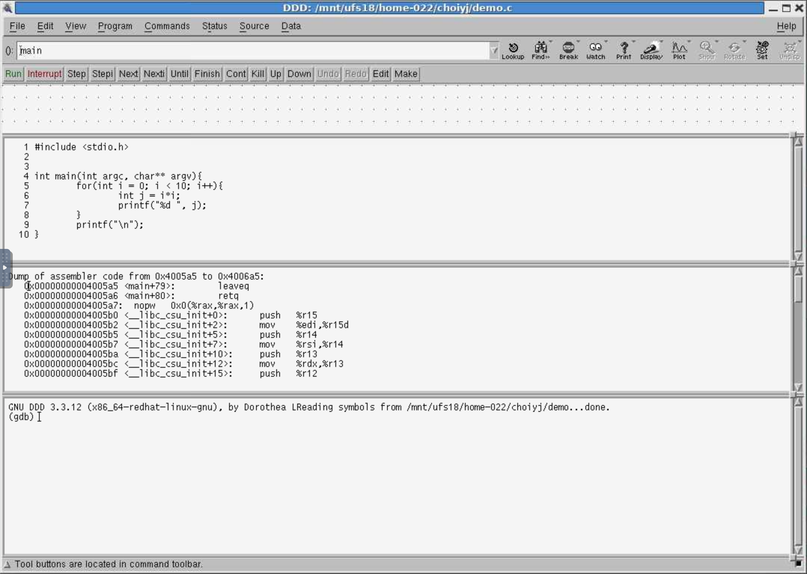
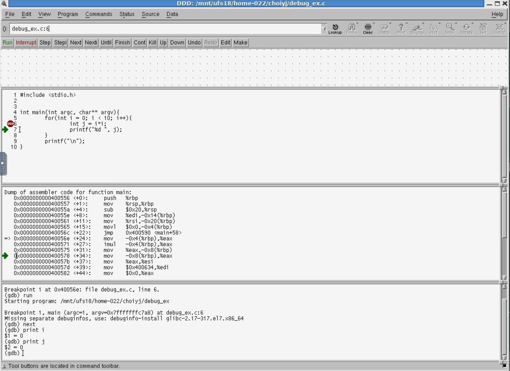
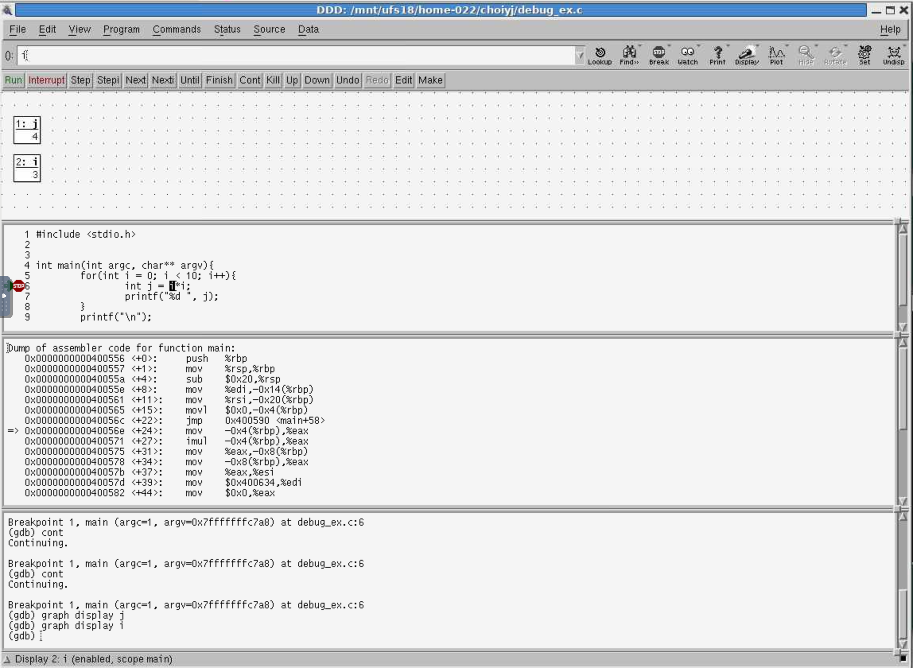

Using DDD
DDD stands for 'Data Display Debbuger'. It is a GUI front end of GDB, the GNU debugger. The main advantage of DDD over GDB is that DDD offers GUI. In this tutorial, we will learn about
- setting and removing breakpoints
- tracing through programs
- examining data at various points in execution.
The DDD interface
When you start DDD, you would see a DDD window like this:

The DDD window consists of 4 sections:
- data window
- source window
- machine code window
- GDB console
You can show/hide each of them in View menu.
You can customize the DDD environment in Edit Preferences menu.
For example, to display line numbers in source window, Edit Preferences Source: check ' Display Source Line Numbers'
Getting started
To use DDD, we need a program to debug. Let's use the following code.
debug_ex.c
1 2 3 4 5 6 7 8 9 | |
Basic steps
First, you need to compile this code with -g option to include the debug symbols such as
1 | |
Now, run the DDD with an executable such as
1 | |
Even though you open an executable such as debug_ex, but the DDD will show the source file name such as debug_ex.c.

Breakpoints stop your program in the middle of running to examine the current state of variables and data structures. You can continue from where you set the breakpoint to finish program execution. To set a breakpoint, double click to the left of the source line in the source window. A STOP icon will appear next to it. Click Run to start execution.
Now, click 'Run' button or type 'run' on GDB console. The green arrow will appear as soon as you hit the breakpoint. The breakpoints you set can be deleted or disabled by right-clicking on the line just as before. Except this time, you'll choose either the "disable breakpoint" or "delete breakpoint" options. In order to set breakpoints in other files (ie, not in the main() function), choose the "Open Source" option from the File menu of DDD. The file dialog should appear. The figure shows that the program ran to the line number 5, and waits your input on line number 6. You can run the code a line by line with 'next' command (you can click the button, or just type on GDB console). To see the variable value, type 'print variable_name' oin GDB console. For example, 'print i' will show 'I' variable's value.
To go to the next break point, click 'cont' button or type 'cont' on GDB console.
When you find bugs, edit your source code in your editor of choice and recompile the code. Reload the new source code into DDD using the Source menu: Source Reload Source.
Common commands
DDD offers command buttons, but you can also type commands directly on GDB console.
| command | Description |
|---|---|
| help | help documentation for topics and commands |
| help breakpoint | Lists help information about breakpoints |
| break | sets breakpoint |
| break line number | Sets breakpoint at a line number |
| break function name | Sets breakpoint at the begining of function name |
| enable, disable, delete/clear | Enable, disable, or delete one or more breakpoints. |
| disable 3 | Disables breakpoint number 3 |
| clear line_number | Clears breakpoint at line_number |
| delete 3 | Deletes breakpoint number 3 |
| delete | Deletes all beakpoints |
| run | Starts program running from the begining. |
| continue (or cont) | Continues execution from the current line to the next breakpoint |
| step (or s) | Execute next line(s) of program |
| step | Executes one line of a program |
| step number | Executes next number of lines of program |
| next (or n) | Like step, but treats a function as a single line. |
| next | Execute the next line |
| next number | Executes next number of lines of program |
| until line_number | Executes program until line number |
| quit | quit DDD |
| list | Lists program source code |
| condition | Conditional breakpoints |
| Display program values, results of expressions | |
| whatis | List type of an expression |
| whatis j | Shows data type of expression 'j' |
| info | Get information |
| info locals | Shows local variables in current stack frame |
| info args | Shows the argument variable of current stack frame |
| info break | Show breakpoints |
| set | Change values of variables, memory, registers |
| set x = 123*y | Set variable x's value to 123*y |
Examining data
While the program is running, you may want to examine the contents of variables. You can do this by right-clicking on a variable name in the DDD window. Upon right-clicking, select "Display". If you want to display the value of a pointer. In this case, use the "Display*" menu item. Right-clicking on a variable name offers other capabilities such as print, lookup, what is (showing the data type), break, and clear.
Instead of right-clicking, you can peek at memory contents also. To do that, click Data Memory. The following window will pop up. 
Some useful resources
- The official DDD Manual http://www.gnu.org/manual/ddd/html_mono/ddd.html
- A good debugging tutorial using DDD http://heather.cs.ucdavis.edu/~matloff/debug.html